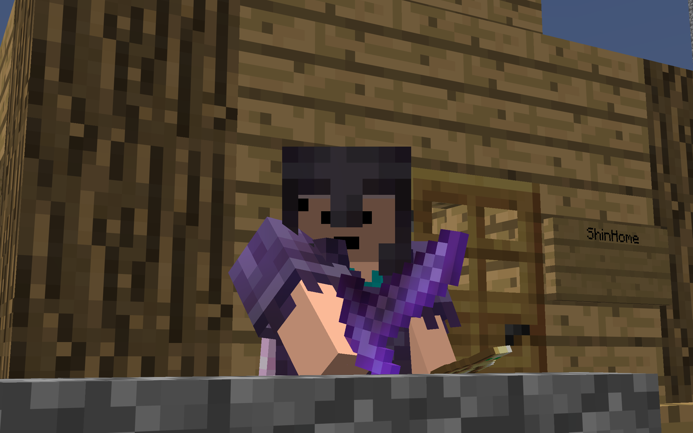
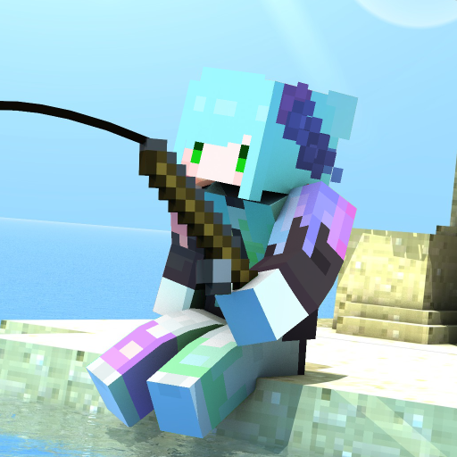
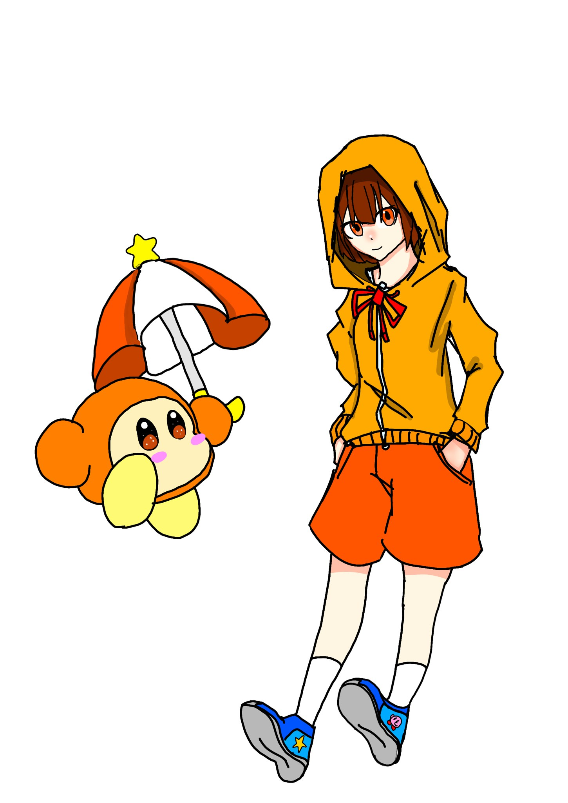
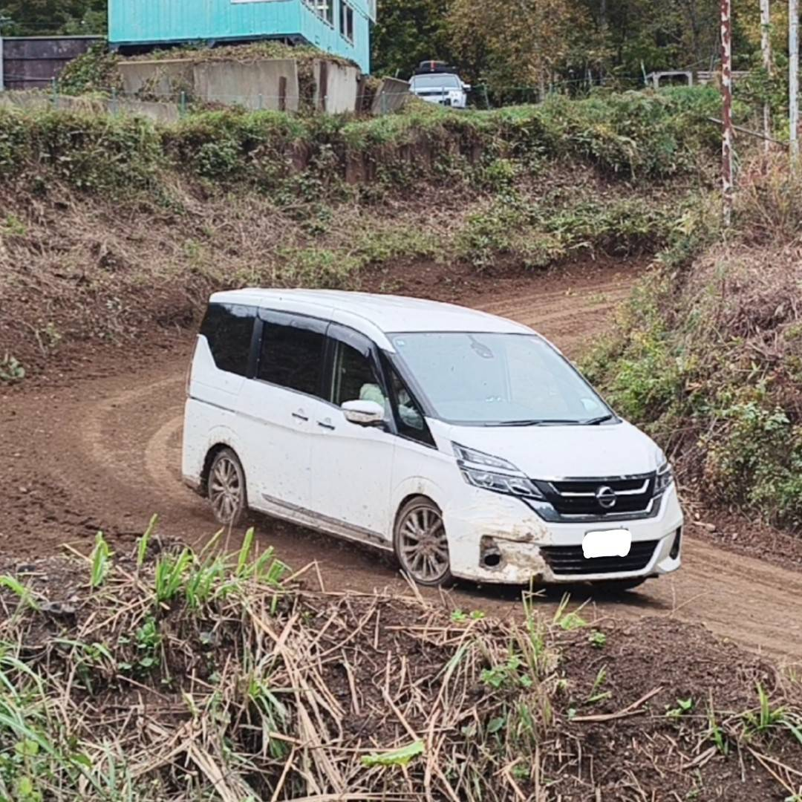
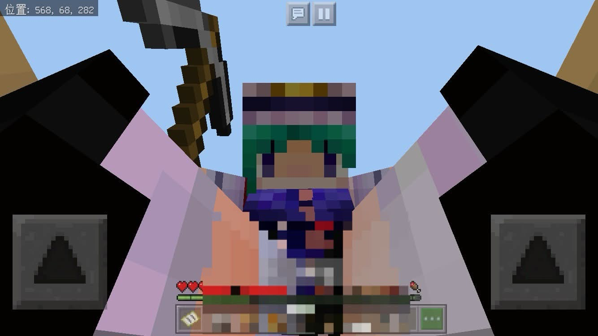
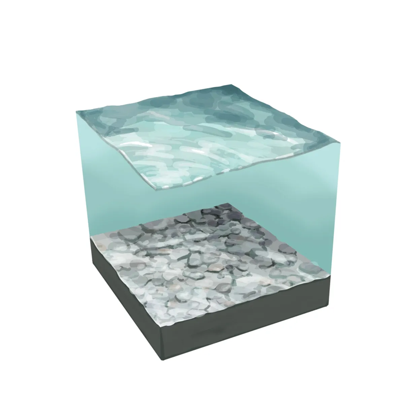
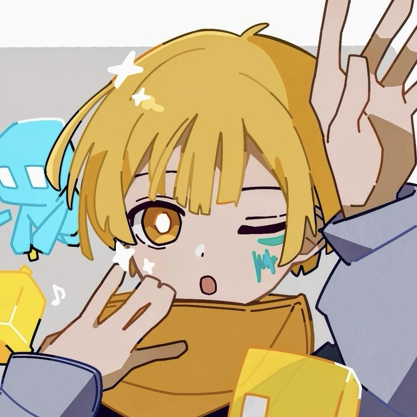

スタッフ紹介
コミュニティを支える管理者チーム
オークの木がDaisuke (Shin)

コミュニティの管理者です。居て楽しいコミュニティを作り続けます。
得意なこと
主な活動
全体の統括、新規プロジェクトの企画、サーバーの運営など。
可栖(かす)

共同管理者の可栖(かす)です。メンバーに近い目線から面白いコミュニティを作っていこうと思います。気軽に話しかけてください。
得意なこと
主な活動
チャット上での管理対応、ルールや企画等の改善修正を担当しています。
カズト提督

OCに長居してるだけの副官です。深夜から朝にかけてが一番元気な男の子です。夜中も元気にしていきましょう。
得意なこと
主な活動
問題発生時の対処、および毎週遅刻しての会議参加をメインに活動中。
AQUA

基本マイクラで生きてる人です。マイクラのことなら大体答えれるので分からないことがあれば遠慮なく聞いてください。
得意なこと
主な活動
チャットの静観、荒らし等への対応
Pothca

情報系のことをちょこちょこやってます
得意なこと
主な活動
コミュニティ運営補佐、技術サポート、SNS運用
なび
よろしくお願いします！
得意なこと
主な活動
特になし
ぼすを

マイクラもサーバー系も飽きました。
これからは車の世界で生きていきます🤗
得意なこと
主な活動
ここのだいちゃんにサーバー貸してます
るしふぁー

るしふぁーです。
ルシカスと呼んでください
マイクラは持ってないので誘わないでください
得意なこと
主な活動
・建築大会の管理
・ごく稀に建築大会以外のイベント開く
かおごん
よろしくお願いします！
得意なこと
主な活動
特になし
またらし

またらしです。それ以上でも、以下でもありません。
得意なこと
主な活動
スタンプの作成
Tommy

生まれ変わるならまた私になりたい
得意なこと
主な活動
みんなの友達
現在10名以上のスタッフが活動中。今後も増員予定です！